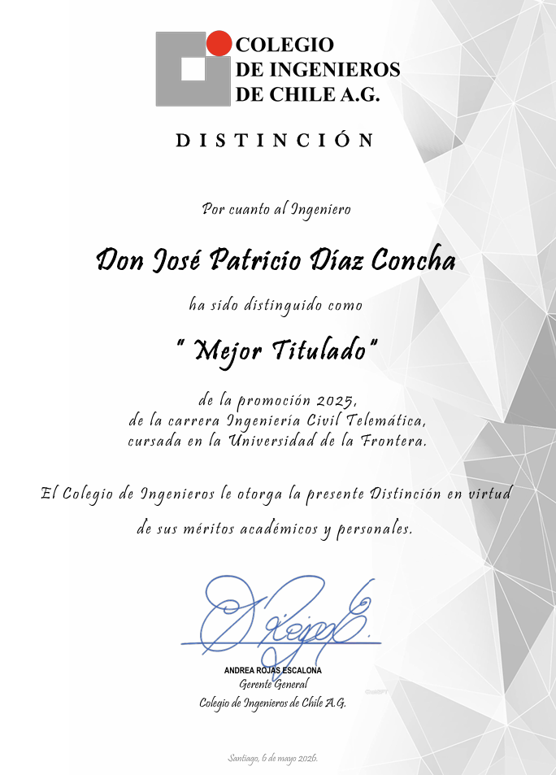
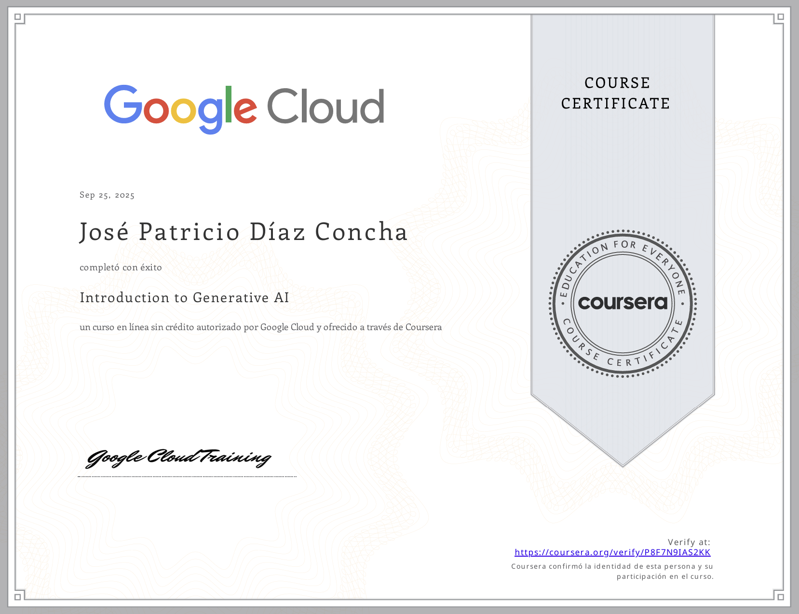

Linux Essentials
Curso e insignia de fundamentos de Linux y línea de comandos · Cisco Networking Academy / NDG.
Formación y reconocimientos
Formación universitaria, cursos e insignias que complementan mi experiencia y los proyectos técnicos del portafolio.
Educación
Ingeniería Civil Telemática, Licenciatura en Ciencias de la Ingeniería · 2020–2025.
Reconocimiento
Distinción otorgada por el Colegio de Ingenieros de Chile tras titularme de Ingeniería Civil Telemática en la Universidad de La Frontera. También reconocido como Alumno Integral de la Promoción 2025 y con el mejor promedio de la carrera durante 2023–2024.

Formación técnica
Formación introductoria en Linux, redes, seguridad e IA. Estas insignias y constancias de curso no se presentan como certificaciones profesionales.
Curso e insignia de fundamentos de Linux y línea de comandos · Cisco Networking Academy / NDG.

Curso e insignia de fundamentos de redes y conectividad · Cisco Networking Academy.

Curso e insignia de conceptos introductorios de ciberseguridad · Cisco Networking Academy.

Constancia de curso introductorio · Google Cloud, a través de Coursera · septiembre de 2025.
Verificar cursoFormación complementaria
Formación universitaria orientada a desarrollar capacidades de liderazgo, gestión y desarrollo de proyectos emprendedores en ámbitos productivos, sociales o culturales. Nota final: 6,6.
18 horas sobre comunicación efectiva, liderazgo, trabajo en equipo, gestión del tiempo, marca personal, finanzas personales, CV y entrevista laboral.